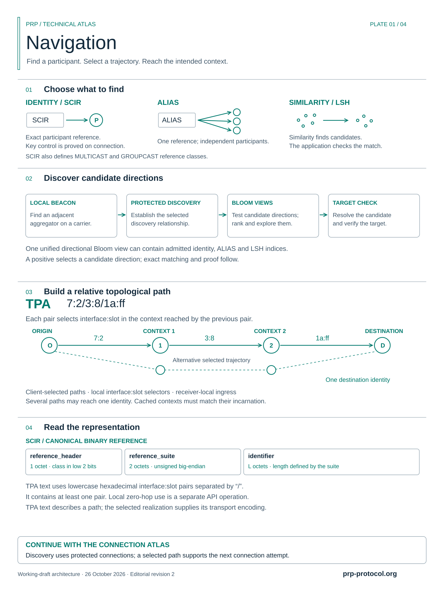

Navigation
Discovery and topological paths.
Working-draft educational diagrams; source-specific qualifications retained.
Open full-size scalable SVG Open full-size PNG


Use your browser’s zoom for finer details. The files below are the unchanged approved originals.

English · 2026-10-26-rcp-v2 · Vector PDF: one page, nominally 360 × 480 mm.
Descriptions and original file hashes (JSON) · Protocol Atlas collection